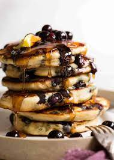

Blueberry Pankcakes!!!

Description
Today for our final and yummiest recipe we will be
feasting upon a yummy Blueberry Pankcake that will
leave you forever waking up early enough to eat breakfast.
(or maybe you'll just eat them for dinner, you do you
boo). The most important thing for this recipe will be
timing and percision. If you are not percise you will
not get to experience the yummy goodness I am!
It is within your best interests to attempt to reach
diamond in Aimlabs before you attempt
this skillful recipe. We had to fire 3 different bloggers
because they all failed at this recipe. If you need more
practice to achieve the needed skills then youtube is your
friend my pal.
Ingredients
- Blueberries
- egg
- some milk
- butter
- flour
- your BEST aim and percision
Step by Step!
- First take the butter and slap it on
the pan and let it melt for probably a while
- In a bowl combine the flower with an egg
and some milk. You may wish to add sweeteners but
personally I hate sweet stuff.
- After everything is mixed and the butter
is melted, add the mixture into the pan and let it
cook!
- Before the pancakes finish throw in some
blueberries and let the pancakes finish.
You do not want the pancakes
to turn blue.
- Set the pancakes on a plate and make them
look cool and enjoy!
- If you enjoyed this recipe please leave your
feedback by emailing us @ theREALlordschicken@websitefaker.net
Return to homepage!